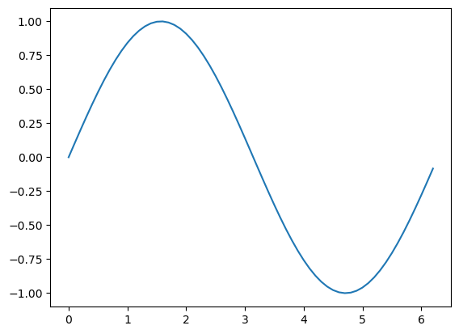
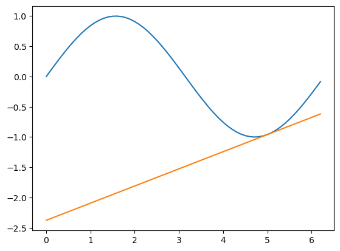
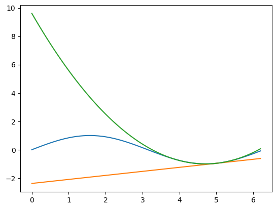
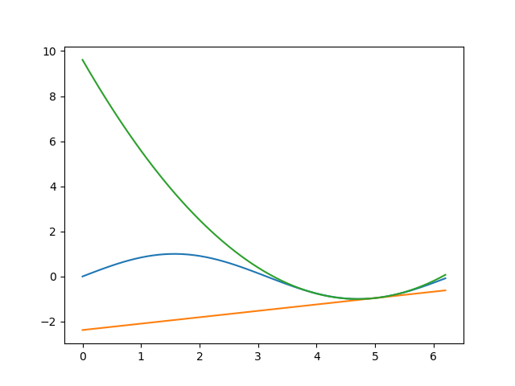
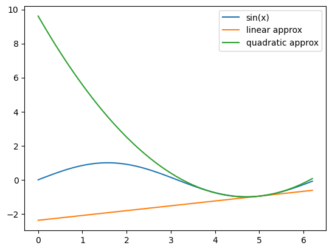

Notes 2023-02-23
Contents
Notes 2023-02-23#
Numpy example: taylor expansion#
# from previous lecture
import numpy as np
f = np.sin
x = np.arange(0, 2*np.pi, .1)
x_0 = 5
f0 = np.sin(x_0)
f1 = (x - x_0)*np.cos(x_0)
f2 = 1/2*(x - x_0)**2 * (-np.sin(x_0))
f0
-0.9589242746631385
x
array([0. , 0.1, 0.2, 0.3, 0.4, 0.5, 0.6, 0.7, 0.8, 0.9, 1. , 1.1, 1.2,
1.3, 1.4, 1.5, 1.6, 1.7, 1.8, 1.9, 2. , 2.1, 2.2, 2.3, 2.4, 2.5,
2.6, 2.7, 2.8, 2.9, 3. , 3.1, 3.2, 3.3, 3.4, 3.5, 3.6, 3.7, 3.8,
3.9, 4. , 4.1, 4.2, 4.3, 4.4, 4.5, 4.6, 4.7, 4.8, 4.9, 5. , 5.1,
5.2, 5.3, 5.4, 5.5, 5.6, 5.7, 5.8, 5.9, 6. , 6.1, 6.2])
f(x)
array([ 0. , 0.09983342, 0.19866933, 0.29552021, 0.38941834,
0.47942554, 0.56464247, 0.64421769, 0.71735609, 0.78332691,
0.84147098, 0.89120736, 0.93203909, 0.96355819, 0.98544973,
0.99749499, 0.9995736 , 0.99166481, 0.97384763, 0.94630009,
0.90929743, 0.86320937, 0.8084964 , 0.74570521, 0.67546318,
0.59847214, 0.51550137, 0.42737988, 0.33498815, 0.23924933,
0.14112001, 0.04158066, -0.05837414, -0.15774569, -0.2555411 ,
-0.35078323, -0.44252044, -0.52983614, -0.61185789, -0.68776616,
-0.7568025 , -0.81827711, -0.87157577, -0.91616594, -0.95160207,
-0.97753012, -0.993691 , -0.99992326, -0.99616461, -0.98245261,
-0.95892427, -0.92581468, -0.88345466, -0.83226744, -0.77276449,
-0.70554033, -0.63126664, -0.55068554, -0.46460218, -0.37387666,
-0.2794155 , -0.1821625 , -0.0830894 ])
numpy filtering#
With logical expressions you get numpy logical arrays that can be used for filtering
x > 1
array([False, False, False, False, False, False, False, False, False,
False, False, True, True, True, True, True, True, True,
True, True, True, True, True, True, True, True, True,
True, True, True, True, True, True, True, True, True,
True, True, True, True, True, True, True, True, True,
True, True, True, True, True, True, True, True, True,
True, True, True, True, True, True, True, True, True])
x[x>1]
array([1.1, 1.2, 1.3, 1.4, 1.5, 1.6, 1.7, 1.8, 1.9, 2. , 2.1, 2.2, 2.3,
2.4, 2.5, 2.6, 2.7, 2.8, 2.9, 3. , 3.1, 3.2, 3.3, 3.4, 3.5, 3.6,
3.7, 3.8, 3.9, 4. , 4.1, 4.2, 4.3, 4.4, 4.5, 4.6, 4.7, 4.8, 4.9,
5. , 5.1, 5.2, 5.3, 5.4, 5.5, 5.6, 5.7, 5.8, 5.9, 6. , 6.1, 6.2])
Plotting with matplotlib#
import matplotlib.pyplot as plt
fig, ax = plt.subplots()

type(fig)
matplotlib.figure.Figure
type(ax)
matplotlib.axes._subplots.AxesSubplot
figure is canvas
axes is where we put data and text
ax.plot(x, f(x), label='sin(x)')
[<matplotlib.lines.Line2D at 0x7fcee013bbe0>]
fig

ax.plot(x, f0 + f1, label='linear approx')
[<matplotlib.lines.Line2D at 0x7fceccc78580>]
fig

ax.plot(x, f0+f1+f2, label='quadratic approx')
[<matplotlib.lines.Line2D at 0x7fceccc99ff0>]
fig

#dir(fig)
fig.savefig('taylor.png')
!ls -l taylor*
-rw-rw-r-- 1 bb1000 bb1000 20107 feb 23 13:22 taylor.png
Reading in the figure

ax.legend() # to get the labels we defined displayed in the plot
<matplotlib.legend.Legend at 0x7fcee013beb0>
fig

alternative approach with plot command#
This gives the most matlab-like interface. In most situations it is preferable to work with figure and axes objects, the object oriented approach
plt.plot(x, f(x), label='sin(x)')
plt.plot(x, f0 + f1, label='linear approx')
plt.plot(x, f0 + f1 + f2, label='quadratic approx')
plt.legend()
<matplotlib.legend.Legend at 0x7fceccc9b160>